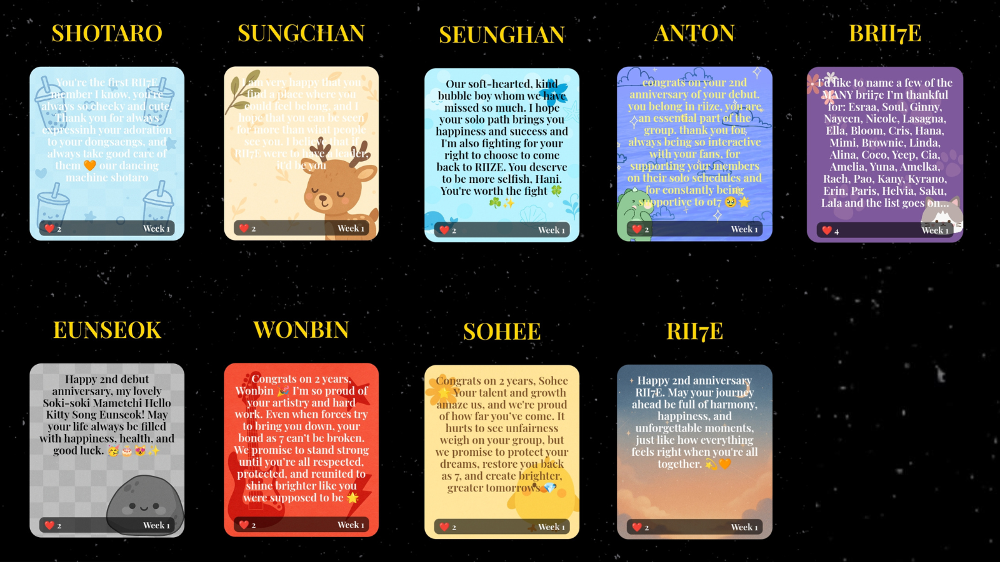
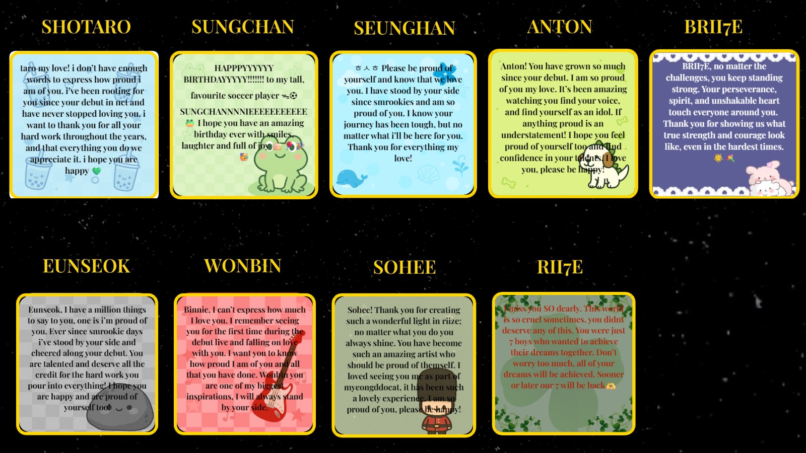
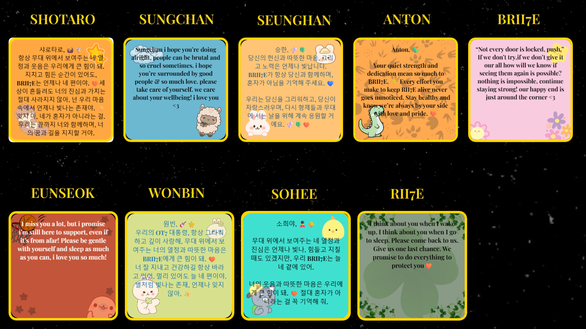
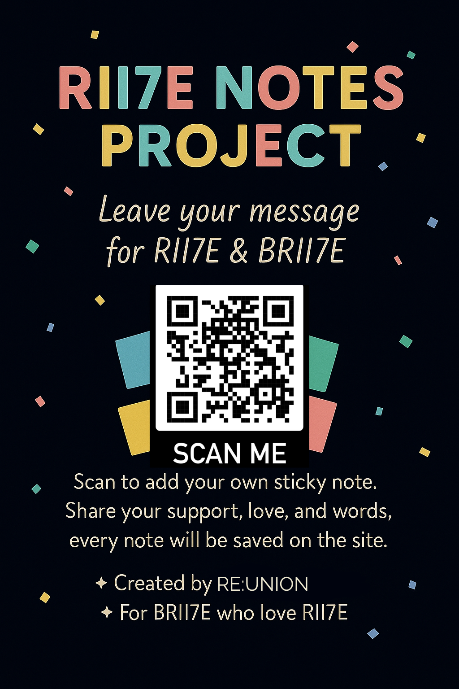

About Eclip7e
Eclip7e is a collective memory and advocacy space created by Brii7e who refuse to let silence,
erasure, or injustice define the group we love. We believe RIIZE is 7, and that Seunghan's removal is
part of a larger failure in the way companies treat their artists and fans.
This space is a home for expression, protest, and remembrance. It’s for the fans who still believe in healing
and in holding power accountable. Through letters, art, campaigns, and love, we build our archive of resistance
and community.
Eclip7e exists to keep truth alive, to remember the past, protect the present, and reshape the future of RIIZE
as it was always meant to be.
📢 News and project updates
🌘 Eclip7e Fanbase Statement & Blog Launch
We have released our official fanbase statement reaffirming our commitment to justice for Seunghan and the full reinstatement of RIIZE as seven members.
Alongside this, our fanbase blog is now live and will serve as the central hub for all fan projects, resources, and updates.
Submission period for fanworks and contributions will open on July 1st and remain open till July 7th.
After that, submissions will close for two weeks to allow for solo management, review, and upload of content.
This cycle will repeat to ensure steady but manageable content updates.
📢 Update: From July 21st onward, submissions will be open indefinitely, giving you the freedom to contribute whenever you like. This change helps us maintain a steady stream of new content and keeps the community actively engaged.
📧 Email Campaigns to SM Entertainment & Media
Date: Starting July 3, 2025
We will begin coordinated email campaigns targeting SM Entertainment executives and key media outlets to demand justice, accountability, and transparency regarding Seunghan’s situation.
These emails are carefully drafted to call for Seunghan’s reinstatement, a public apology, and stronger protections for idols.
Instructions and participation templates will be shared shortly.
Justice and Reinstatement Campaign for Seunghan & RIIZE
Date: July 7–13, 2025
This campaign is a collective effort by fans worldwide to call on SM Entertainment and Center 5 to deliver justice and reinstate Seunghan as an official member of RIIZE. It highlights the vital importance of fairness and respect for every member of the group, affirming that RIIZE is strongest and most complete when all seven members are present.
Throughout the campaign week, participants will share thoughtful, respectful messages on Instagram and X. These messages will focus on calling for transparency, accountability, and fairness, emphasizing that justice must come before any other consideration.
The campaign is designed to be peaceful but firm, aiming to create a unified and positive voice that respectfully reminds SM Entertainment and Center 5 of their responsibility toward the artists and their fans. It seeks to promote healing, respect, and integrity while demanding justice and reinstatement for Seunghan, ensuring the full group can continue to grow and succeed together.
🌘 Brii7e Spotlight Week 🌘
We’re excited to celebrate each RIIZE member with a special day dedicated to them, sharing our love, support, and appreciation.
This project was initially planned for Weverse, but to maintain a positive and focused environment, and to protect Seunghan from any unwanted negativity or conflicts, we decided to move it exclusively to X. Along with this, we’ve adjusted the timeframe to July 21-28 to better fit the new format and keep the momentum strong.
From July 21st to 28th, we’ll highlight Shotaro, Eunseok, Sungchan, Wonbin, Seunghan, Sohee, and Anton, honoring each one’s unique journey and strength.
🧡 Join us daily by sharing fanart, messages, edits, or memories celebrating that day’s member.
✨ RII7E NOTE PROJECT ✨
Launched: September 4, 2025
The RII7E NOTE PROJECT is a digital wall of sticky notes made by BRII7E, for RIIZE.
It’s a space where fans can leave their thoughts, memories, encouragement, and love, all gathered in one place,
growing brighter with every note added.
🧡 Every note is love — a reminder of how much RIIZE means to us.
✊ Every note is unity — proof that BRII7E stands together, no matter what.
🕊️ Every note is hope — for the future we believe in and continue to dream of.
From the very first day, BRII7E has been filling the wall with touching words and beautiful designs.
To share the warmth of this project, we also feature weekly favorite notes,
little glimpses of the positivity and strength that fans bring to life through their messages.
💌 Weekly Favorite Notes



×

Looking forward, the goal is to continue gathering notes until the end of the year,
creating a meaningful archive of love and encouragement that will stand as a lasting reminder of BRII7E’s support for RII7E.
👉 Leave your note here:
RII7E Note Project
👉 Or scan the QR code on the flyer to join instantly.

✨ Official project hashtag: #RII7ENOTEPROJECT
Use it for posts about your notes, designs, or any project-related updates.
The hashtag will also be used to share highlights, schedules, and news.
Together, we shine brighter. 🧡
Shared Memories
Before the silence, there were smiles, laughter, and milestones that made us feel alive. This section is dedicated
to your most cherished memories with RIIZE as seven, comeback moments, fancalls, livestreams, lyrics that hit deep,(pre boycott)
or the first time you heard their voices. This is where we keep the joy close and the light alive. Every memory matters.
I love how wonbin made a phone case for seunghan and it only had sohee’s face and seunghan’s face. That was proof that all of the members knew how much seunghan loves sohee hahaha
The behind the scenes of the Memories MV is one of the most chaotic things ever 🤣 They were teasing Anton before his pool scene, Eunseok just casually stealing Anton’s drink, Seunghan making sure that none of the members were cold, Shotaro playing around by the pool or the sword fight with Sungtaro 🤣🤣🤣
i loved seeing half of the group as mc’s during debut era and talk saxy era, they did such a good job and i hope to see eunhani mc duo soon again!
Letters to RII7E
A section dedicated to fan letters written to Seunghan, the other boys, or the fandom as a whole. Letters
of grief, celebration, or hope, your voice belongs here and will be displayed with care and dignity.
Dear Seunghan,
I just want you to know that no matter where life takes you, there will always be people standing by your side, cheering for you, believing in you, and loving you.
There may be moments when things feel overwhelming or uncertain, but please remember you’re never alone. So many of us see your heart, your dreams, and your efforts, and we are here to support you, quietly and fiercely, through every high and every low.
You have touched so many hearts simply by being yourself, and that’s something no challenge can ever take away. Even on the days when it feels hard to smile, know that your existence already brings light to so many lives, including mine.
We are with you, Seunghan, not just for the good days, but for all the days. We believe in your journey, in your growth, and in all the beautiful things ahead for you.
Always by your side.
This Letter is for BRII7E <3
These past few months have been draining and difficult for all of us. Many people that we considered to be trustworthy have broken our trust. Many people that we thought would fight with us until the very end gave up and decided to reward SM’s cruel actions.
The thought that so many of us stayed, so many of us chose morals over music, is truly so beautiful. I personally struggle with feeling like I fit in anywhere, but BRII7E, you’ve shown me nothing but love and warmth. I feel so safe in this community. I feel like I’m enough just the way I am. Thank you, BRII7E, for showing me that there are still so many lovely souls out there in the world.
I also want to thank those of you who are working so hard to achieve justice for RII7E, those who make hashtag threads, interactive posts, motivational posts, and those who stand up for other BRII7E.
We are so close to meeting our seven stars again, I’m so sure of it. It might not be this month or the next one, but soon! Just hold on a little longer and reach out to any other BRII7E if you ever feel hopeless.
You are so special, and your hard work does not go unnoticed <3
BRII7E STANDS WITH RII7E
I see so many of us being scared of being loud about our movement and it’s wrong. We shouldn’t worry about what might happen or what other people will say. Brii7e has never and will never be the villain of the story. We are the only ones who listened to RII7E, we are the only ones who heard their voices and respected their choices. We are still here, because we believe that RII7E should be respected and seen as human beings. Riize isn’t a concept or a fictional character. They are real human beings, with real feelings.
Don’t be afraid of being loud about the boycott, be the annoying person by constantly bringing the boycott up, call people out for rewarding a company that mistreats their artists. If you ever feel harassed or scared reach out to a trustworthy brii7e and I can promise you that you will have at least 20 people standing up for you
We can only make a change if we are consistent, fearless and loud.
I believe in us. I believe in RII7E.
for 03z
i believe that the two of you are platonic soulmates, the love you have for each is so visible and it brings me so much joy. i love the small things such as how you have matching clothes. even the rest of the members knows how strong and beautiful your bond is. i remember seeing how sohee’s face would glow from happiness when seunghan made his jokes or how happy he got when seunghan chose him as his roommate. the fact that they were roommates during pre-debut era too 🥹 also how seunghan struggled with having either a 5 year old sohee or 5 sohee’s was so so cute.
it’s still so heartbreaking to think about how completely devastated and miserable sohee was after oct 13th. sohee isn’t someone who cries easily, there has been multiple times where the rest of the members were crying, but not him. however after seunghan was forced to leave sohee was crying, which says a lot about their unbreakable friendship.
even though you’re definitely still friends privately you deserve to show your friendship without being worried. i promise to continue fighting hard for justice, so we can see u two back again!
Wall of Light
These are the voices and hearts behind Eclip7e. Every message, every image, every letter builds something beautiful.
Thank you for showing up, not just for Seunghan and RIIZE, but for each other.
When content is published, and the creator gives permission, their name or handle will be honored on this page.
This is our wall of light, built by all of us.